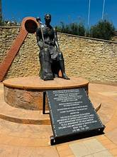
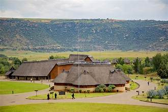

WELCOME TO LESOTHO
Lesotho is a beautiful mountain kingdom in Southern Africa. It is known for its high mountains, traditional villages, unique culture and friendly people. The country offers different experiences for visitors who enjoy nature, adventure, history and cultural activities.
This website introduces visitors to tourist attractions throughout Lesotho. You can learn about interesting places to visit, activities to enjoy, accommodation options and important travel information.
Learn More About LesothoTOURIST ATTRACTIONS
Thaba Bosiu
Visit this important historical site associated with King Moshoeshoe I and the founding of the Basotho Nation.
Maletsunyane Falls
Discover a famous waterfall near Semonkong, surrounded by beautiful mountain scenery.
Sehlabathebe National Park
Explore natural landscapes, unusual rock formations and the wildlife of this protected area.
Katse Dam
Enjoy impressive mountain views and learn about one of Lesotho's important water infrastructure projects.
AfriSki and the Mountain Resorts
Experience mountain activities and winter scenery in the highlands when conditions permit.
Morija
Learn about Basotho history, heritage and education through Morija's cultural attractions.
BASOTHO CULTURE AND TRADITIONS
Basotho culture is an important part of tourism in Lesotho. Visitors can learn about traditional clothing, music, dances, crafts, food and the history of the Basotho people.
The Basotho blanket and traditional hat, known as the mokorotlo, are well-known cultural symbols. Visitors should respect local customs and ask permission before taking photographs of people.
Learn About Our CultureACCOMMODATION
Tourists visiting Lesotho can look for hotels, guesthouses, lodges, campsites and bed-and-breakfast establishments. Available choices depend on the destination and travel season.
Before booking, check prices, availability, facilities, transport and the distance from your chosen attractions.
Plan Your VisitTOURISM ACTIVITIES
- Hiking and mountain sightseeing.
- Horse riding and pony trekking with local operators.
- Visiting historical and cultural sites.
- Photography and nature exploration.
- Learning about Basotho traditions and crafts.
- Enjoying winter activities where available.
Choose activities according to your interests, fitness level, the weather and local safety advice.
View Our ServicesGALLERY
Explore photographs showing the mountains, culture and natural beauty of Lesotho. Click an image to enlarge it.



TRAVEL INFORMATION
Plan your journey before visiting Lesotho. Check road conditions, weather, accommodation, transport and the opening hours of the attractions you want to visit.
Useful Tips for Visitors
- Check the weather before travelling to the mountains.
- Confirm opening hours and entrance fees.
- Arrange reliable transport and accommodation.
- Carry warm clothing because mountain weather can change quickly.
- Check passport and entry requirements where applicable.
- Respect local customs, wildlife and the environment.
CONTACT US
Do you want to learn more about tourism in Lesotho? Contact the relevant tourism office or service provider for information about destinations, tours, accommodation and travel arrangements.
We invite you to discover the natural beauty, history and culture of the Mountain Kingdom.
Contact Us